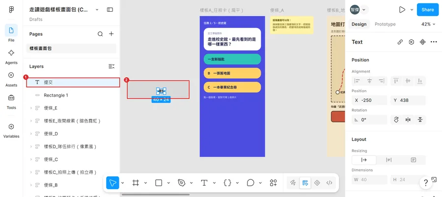

所有週次 · 遊戲設計學 · W11（Figma 三週中的第 1 週）Semua Minggu · Desain Game · W11 (Minggu ke-1 dari 3 minggu Figma)
把你的遊戲點子，排成一頁單頁企劃Susun ide gamemu menjadi rencana satu halaman
最後更新：2026-11-18 21:46Pembaruan terakhir: 2026-11-18 21:46
這週要做：從 12 個樣板（老師做好、可玩可改的遊戲範本）挑 1 個當起點，在 Figma 排出一頁單頁企劃，放 3 個遊戲畫面。Yang perlu dikerjakan minggu ini: Pilih 1 dari 12 template (contoh game buatan dosen yang siap dimainkan dan diubah) sebagai titik awal, lalu susun rencana satu halaman di Figma dengan menampilkan 3 layar game.
怎麼交：今天先做問卷（截圖交 W11-1，11/18 23:30 前）；Figma 單頁企劃連結＋ AI 助教結果卡交 W11-2，12/02（三）19:05 截止，期限一到不能再交（盡量在課堂上做完；期限有兩週，回家可以補）。Cara mengumpulkan: Hari ini isi kuesioner terlebih dahulu (ambil tangkapan layar dan kumpulkan ke W11-1, sebelum 18/11 pukul 23:30); kumpulkan tautan rencana satu halaman Figma kamu + kartu hasil asisten pengajar AI ke W11-2, batas waktu sampai 02/12 (Rabu) pukul 19:05, setelah lewat batas waktu tidak bisa mengumpulkan lagi (usahakan selesai di kelas; kamu punya waktu dua minggu, jadi bisa dilengkapi di rumah).
3 個畫面＋一句話說你的遊戲＋一個台南的東西，就完成了。3 layar + satu kalimat penjelasan tentang gamemu + satu hal khas Tainan, selesai!
做完的樣子：別人只看這一頁就看得懂；能點的互動版，下週再用 Google AI Studio 做。Hasil akhirnya: Orang lain bisa langsung paham hanya dengan melihat satu halaman ini; versi interaktif yang bisa diklik akan dibuat minggu depan menggunakan Google AI Studio.
做完長這樣（點圖可以放大）Contoh hasil jadi seperti ini (klik gambar untuk memperbesar)

- 一句話說你的遊戲Satu kalimat penjelasan game kamu
- 3 個遊戲畫面3 layar game
- 台南的東西，在遊戲裡變成什麼Hal tentang Tainan, berubah menjadi apa di dalam game
全部用「03 模組庫」的模組拼的，旁邊標了編號，你也可以照著拼。Semuanya disusun menggunakan modul dari 「03 模組庫」(03 Pustaka Modul), nomor kodenya sudah ditandai di samping, kamu juga bisa menyusunnya dengan cara yang sama.


問卷Kuesioner課程自我檢核問卷（約 4 分鐘）Kuesioner evaluasi diri mata kuliah (sekitar 4 menit)
約 4 分鐘，今天填一次就好。Sekitar 4 menit, cukup isi sekali saja hari ini.
填完會出現一張「問卷完成卡」（上面有完成碼）。把它截圖，交到 flipclass 的「W11-1」（成績佔 3%）。Setelah selesai diisi, akan muncul "Kartu Selesai Kuesioner" (ada kode penyelesaian di atasnya). Ambil tangkapan layar (screenshot), lalu kumpulkan ke 「W11-1」(W11-1) di flipclass (berbobot nilai 3%).
六步Enam langkah做完這一份Selesaikan bagian ini
1玩 2 個樣板，挑 1 個當起點Mainkan 2 template, lalu pilih 1 sebagai titik awal約 25 分鐘Sekitar 25 menit
每張卡按「▶ 試玩」玩一玩（括號裡是這個樣板的示範遊戲名）。
完成的樣子：你說得出「我想用這個當起點，因為＿＿」。Klik tombol 「▶ 試玩」(Coba mainkan) pada setiap kartu untuk mencoba (nama di dalam tanda kurung adalah contoh game untuk template ini).
Kondisi selesai: Kamu bisa mengatakan "Saya ingin memakai ini sebagai titik awal karena ＿＿".
2把那個樣板的 Figma 複製到自己帳號Salin Figma dari templat itu ke akun kamu sendiri約 10 分鐘Sekitar 10 menit
按那張卡的「🎨 Figma 檔」（老師做好的範本，可以複製成自己的），用學校信箱登入 Figma，按檔名旁的 ▾ →「Duplicate to your drafts」（複製到我的草稿）。
完成的樣子：檔名改成你的編號。Klik 「🎨 Figma 檔」(File Figma) pada kartu itu (templat yang sudah disiapkan dosen, bisa disalin menjadi milikmu sendiri), masuk ke Figma dengan email kampus, klik tanda ▾ di samping nama file → 「Duplicate to your drafts」.
Tampilan setelah selesai: Nama file sudah diganti dengan nomormu.
Untuk versi bahasa Indonesia, gunakan tautan 「Figma (Bahasa Indonesia)」 di kartu template yang kamu pilih pada langkah 1 (isi file sama, teks dalam bahasa Indonesia).
操作圖解：登入與複製Panduan gambar: Cara masuk dan menyalin


不小心點到「Move to trash」（移到垃圾桶）：到 Figma 首頁左邊的「Trash」（垃圾桶）還原。Kalau tidak sengaja mengeklik «Move to trash» (Pindahkan ke tempat sampah): buka «Trash» (Tempat sampah) di sebelah kiri halaman utama Figma untuk memulihkannya.
3從「03 模組庫」挑 2–3 塊，做出 3 個畫面Pilih 2–3 blok dari «03 模組庫» (03 Pustaka Modul), lalu buat 3 layar約 30 分鐘Sekitar 30 menit
到「03 模組庫」（Figma 檔裡放現成模組的那一頁）挑 2–3 個模組（每個有編號，例如 M6-02，跟 AI 助教說話時可以用編號），複製（Ctrl＋C），貼到「02 遊戲介面」（Ctrl＋V），做出 3 個畫面。貼上之後，拖到你要的位置；拖角落可以縮小。只用模組庫的模組組合也可以。
完成的樣子：3 個畫面都有東西，看得出在玩什麼。Buka «03 模組庫» (03 Pustaka Modul, yaitu halaman di berkas Figma yang berisi modul siap pakai), pilih 2–3 modul (setiap modul memiliki nomor kode, misalnya M6-02, kamu bisa menggunakan nomor ini saat berbicara dengan asisten pengajar AI), salin (Ctrl＋C), lalu tempel ke «02 遊戲介面» (02 Antarmuka game) dengan (Ctrl＋V) untuk membuat 3 layar. Setelah ditempel, geser ke posisi yang kamu inginkan; tarik bagian sudutnya untuk memperkecil. Kamu juga boleh menyusunnya hanya menggunakan modul dari Pustaka Modul.
Hasil yang diharapkan: Ketiga layar terisi konten dan terlihat jelas cara memainkannya.
看 29 秒示範：貼積木Tonton video contoh 29 detik: menempel blok
看 29 秒示範：改字與顏色Tonton video contoh 29 detik: mengubah teks dan warna
操作圖解：怎麼拼、Figma 操作Panduan bergambar: cara menyusun dan menggunakan Figma
不知道從哪裡開始：挑一張 P1「一句話」、兩張 C 台南卡、一個 M 玩法，改幾個字就是你的點子。改文字：對文字連點兩下，出現閃爍的游標就能打字，Ctrl＋A 全選，輸入新字，Esc 離開；改錯按 Ctrl＋Z。改顏色：點方框，點右邊的填色色塊，挑一個新的顏色。Kalau bingung harus mulai dari mana: pilih satu kartu P1 «一句話» (Satu kalimat), dua kartu C kartu Tainan, dan satu M cara bermain, lalu ubah beberapa kata untuk menjadikannya ide kamu sendiri. Mengubah teks: Klik dua kali pada teks sampai kursor berkedip muncul untuk mulai mengetik, tekan Ctrl＋A untuk memilih semua, ketik teks baru, lalu tekan Esc untuk keluar; jika salah, tekan Ctrl＋Z untuk membatalkan. Mengubah warna: Klik kotak yang ingin diubah, klik kotak warna Fill di sebelah kanan, lalu pilih warna baru.


進階操作（選看）：貼上後連動、複製一份Operasi lanjutan (opsional): Keterkaitan setelah menempelkan (paste), menduplikasi satu salinan
這段影片用教育版畫面錄；標「需要教育版」的功能免費帳號沒有，其他功能兩邊一樣。Video ini direkam menggunakan layar versi pendidikan; fitur bertanda "memerlukan versi pendidikan" tidak tersedia di akun gratis, fitur lainnya sama di kedua versi.
貼上後的連動與斷開（免費版可用（教育版畫面驗證，免費版若看到不一樣請問老師））
同一個檔裡複製再貼上的，會跟原件連動：原件改，它也跟著改。想大改其中一個，選到它按 Ctrl＋Alt＋B 斷開連動。從別的檔貼進來的本來就是獨立的，不用斷開。Keterkaitan dan pemutusan setelah menempelkan (paste) (Dapat digunakan di versi gratis (Diverifikasi dengan layar versi pendidikan, jika versi gratis terlihat berbeda, silakan tanyakan kepada guru))
Objek yang disalin dan ditempelkan di dalam file yang sama akan terhubung dengan aslinya: jika yang asli diubah, salinannya juga ikut berubah. Jika ingin mengubah salah satunya secara drastis, pilih objek tersebut lalu tekan Ctrl＋Alt＋B untuk memutuskan keterkaitannya. Objek yang ditempelkan dari file lain pada dasarnya sudah berdiri sendiri, jadi tidak perlu diputuskan.
看 37 秒示範：貼上後的連動與斷開Tonton demonstrasi 37 detik: Keterkaitan dan pemutusan setelah menempelkan (paste)
複製一份：Ctrl＋D、Alt 拖曳（免費版可用（教育版畫面驗證，免費版若看到不一樣請問老師））
同一種積木要放好幾個：選到按 Ctrl＋D，會疊在原位，拖一下才看得到；或按住 Alt 不放直接拖，拖到哪複製就落在哪（先按住 Alt、再拖，放開滑鼠後才放開 Alt）。Menduplikasi satu salinan: Ctrl＋D, seret dengan Alt (Dapat digunakan di versi gratis (Diverifikasi dengan layar versi pendidikan, jika versi gratis terlihat berbeda, silakan tanyakan kepada guru))
Jika ingin menaruh beberapa blok mekanik yang sama: pilih blok lalu tekan Ctrl＋D, hasilnya akan bertumpuk di posisi semula, seret sedikit baru terlihat; atau tahan tombol Alt lalu langsung seret, duplikasi akan berada di tempat kamu melepasnya (tekan dan tahan Alt terlebih dahulu, lalu seret, lepaskan mouse sebelum melepaskan Alt).
看 15 秒示範：複製一份：Ctrl＋D、Alt 拖曳Tonton demonstrasi 15 detik: Menduplikasi satu salinan: Ctrl＋D, seret dengan Alt
4排成「01 單頁企劃」Menata menjadi 「01 單頁企劃」(01 rencana satu halaman)約 20 分鐘Sekitar 20 menit
到「01 單頁企劃」，把 3 個畫面和幾張卡排成一頁，版面自由。貼上之後，拖到你要的位置；拖角落可以縮小。
完成的樣子：別人只看這一頁、不聽你講，看得懂。Buka 「01 單頁企劃」(01 rencana satu halaman), tata 3 layar dan beberapa kartu menjadi satu halaman, tata letaknya bebas. Setelah ditempelkan, seret ke posisi yang kamu inginkan; seret sudutnya untuk memperkecil.
Bentuk yang sudah selesai: Orang lain dapat memahaminya hanya dengan melihat halaman ini saja, tanpa perlu mendengarkan penjelasan kamu.
看 50 秒示範：排成一頁Tonton demonstrasi 50 detik: Menata menjadi satu halaman
操作圖解：好的單頁企劃Ilustrasi langkah kerja: Rencana satu halaman yang baik
- 一頁看得完。Dapat dibaca dan dipahami semuanya dalam satu halaman.
- 最好玩的那個畫面放最大。Buat layar yang paling seru menjadi paling besar.
- 用圖說話，少用字。Bicaralah lewat gambar, kurangi penggunaan kata-kata.
參考：Stone Librande（遊戲設計師）把整款遊戲畫在一張紙上的做法。Referensi: cara Stone Librande (perancang game) menggambar seluruh game dalam satu lembar kertas.
進階操作（選看）：排整齊、縮放、鎖定Operasi tingkat lanjut (opsional): merapikan, mengubah ukuran, dan mengunci
這段影片用教育版畫面錄；標「需要教育版」的功能免費帳號沒有，其他功能兩邊一樣。Video ini direkam menggunakan layar versi pendidikan; fitur bertanda "memerlukan versi pendidikan" tidak tersedia di akun gratis, fitur lainnya sama di kedua versi.
自動排版：Shift＋A（免費版可用（教育版畫面驗證，免費版若看到不一樣請問老師））
選 2–3 個積木，按 Shift＋A，它們會被包進一個自動排好的框。預設會沿用原本的空隙（可能很大），到右邊把「間距」改成 24。Tata letak otomatis: Shift＋A (Bisa digunakan di versi gratis (tampilan diverifikasi di edisi edukasi, jika melihat hal berbeda di versi gratis silakan tanyakan kepada guru))
Pilih 2–3 blok, tekan Shift＋A, dan semuanya akan dimasukkan ke dalam bingkai yang tertata otomatis. Nilai default akan mengikuti jarak jeda sebelumnya (bisa jadi sangat besar), jadi pergilah ke sisi kanan dan ubah 「間距」(Jarak) menjadi 24.
看 17 秒示範：自動排版：Shift＋ATonton demo 17 detik: Tata letak otomatis: Shift＋A
整理排列：Tidy up（免費版可用（教育版畫面驗證，免費版若看到不一樣請問老師））
貼了好幾個、歪歪斜斜：全選後按 Ctrl＋Alt＋Shift＋T，一次排整齊；不滿意按 Ctrl＋Z。不要按成 Ctrl＋Alt＋K（會把東西變成元件）。Merapikan susunan: Tidy up (Bisa digunakan di versi gratis (tampilan diverifikasi di edisi edukasi, jika melihat hal berbeda di versi gratis silakan tanyakan kepada guru))
Jika sudah menempel beberapa objek dan posisinya miring: pilih semua lalu tekan Ctrl＋Alt＋Shift＋T untuk merapikannya sekaligus; jika kurang puas, tekan Ctrl＋Z. Jangan sampai salah menekan Ctrl＋Alt＋K (ini akan mengubah objek menjadi komponen).
看 16 秒示範：整理排列：Tidy upTonton demo 16 detik: Merapikan susunan: Tidy up
縮放：拖角落、K 比例縮放（免費版可用（教育版畫面驗證，免費版若看到不一樣請問老師））
拖四個角之一，按住 Shift 保持比例；連裡面的字和間距一起等比縮，選好之後按 K 再拖角落，用完按 V 回到移動工具。Mengubah ukuran: Tarik sudut, K untuk skala proporsional (Bisa digunakan di versi gratis (tampilan diverifikasi di edisi edukasi, jika melihat hal berbeda di versi gratis silakan tanyakan kepada guru))
Tarik salah satu dari empat sudut sambil menahan Shift untuk menjaga proporsi; jika ingin teks dan jarak di dalamnya ikut membesar atau mengecil secara proporsional, tekan K setelah memilih objek, lalu tarik sudutnya. Setelah selesai, tekan V untuk kembali ke alat pemindah.
看 19 秒示範：縮放：拖角落、K 比例縮放Tonton demo 19 detik: Mengubah ukuran: Tarik sudut, K untuk skala proporsional
鎖定與隱藏（免費版可用（教育版畫面驗證，免費版若看到不一樣請問老師））
背景不想拖到：Ctrl＋Shift＋L 鎖定、Ctrl＋Shift＋H 隱藏，再按一次還原。鎖定後點不到，要從左邊圖層清單點它。Mengunci dan menyembunyikan (Bisa digunakan di versi gratis (tampilan diverifikasi di edisi edukasi, jika melihat hal berbeda di versi gratis silakan tanyakan kepada guru))
Jika latar belakang tidak ingin sengaja tertarik: tekan Ctrl＋Shift＋L untuk mengunci, Ctrl＋Shift＋H untuk menyembunyikan, dan tekan sekali lagi untuk membatalkannya. Setelah dikunci, objek tidak bisa diklik di layar, kamu harus memilihnya dari daftar layer di sisi kiri.
看 19 秒示範：鎖定與隱藏Tonton demo 19 detik: Mengunci dan menyembunyikan
5找右下角的 AI 助教聊你的點子Ajak ngobrol asisten pengajar AI di pojok kanan bawah tentang idemu約 15 分鐘Sekitar 15 menit
① 點右下角的「問AI助教」。② 從「你的遊戲裡最好玩的那一刻是什麼？」聊起，至少聊 3 輪（你說一次、AI 助教回一次＝1 輪）。③ 聊夠了，AI 助教會把你的話整理成一句，按「對，就這樣」。④ 畫面出現「助教結果卡」，截圖留著，交到 flipclass 的 W11-2。AI 助教不打分數，但討論會被評分（佔 W11-2 這份作業的 50%），老師會讀。
完成的樣子：畫面出現「助教結果卡」。① Klik 「問AI助教」(Tanya asisten pengajar AI) di pojok kanan bawah. ② Mulailah mengobrol dari 「你的遊戲裡最好玩的那一刻是什麼？」(Momen apa yang paling seru di dalam game kamu?), mengobrollah minimal 3 putaran (kamu bicara sekali dan asisten pengajar AI membalas sekali = 1 putaran). ③ Setelah cukup mengobrol, asisten pengajar AI akan merangkum perkataanmu menjadi satu kalimat, lalu klik 「對，就這樣」(Ya, begitu saja). ④ Layar akan menampilkan 「助教結果卡」(kartu hasil asisten pengajar), ambil tangkapan layar untuk disimpan, lalu kumpulkan ke W11-2 di flipclass. Asisten pengajar AI tidak memberi nilai, tetapi diskusinya akan dinilai (berbobot 50% dari tugas W11-2 ini) dan akan dibaca oleh dosen.
Tampilan setelah selesai: Layar menampilkan 「助教結果卡」(kartu hasil asisten pengajar).
6分享連結、交件Bagikan tautan dan kumpulkan tugas約 5 分鐘Sekitar 5 menit
在 Figma 按右上角的「Share」（分享），把存取設成「Anyone」（任何人）、「can view」（可檢視），再按「Copy link」（複製連結），用無痕視窗貼上試一次。到 flipclass 的 W11-2 貼上連結，再附助教結果卡截圖。
完成的樣子：連結打得開，兩樣都交了；打不開視同未繳交。Di Figma, klik tombol Share di pojok kanan atas, atur akses menjadi Anyone dan can view, lalu klik Copy link. Coba buka dan tempel tautan tersebut di jendela penyamaran (incognito). Buka W11-2 di flipclass, tempel tautannya, dan lampirkan tangkapan layar kartu hasil asisten pengajar.
Hasil yang diharapkan: Tautan bisa dibuka dan kedua hal tersebut sudah dikumpulkan; jika tautan tidak bisa dibuka, tugas dianggap belum dikumpulkan.
操作圖解：分享Panduan bergambar: Membagikan tautan

卡住了：常見的卡住與解法Mengalami kendala: Masalah umum dan solusinya
- 找不到複製的選項Tidak menemukan pilihan untuk menyalin
- 先登入 Figma（沒登入只能看）。點檔名旁的 ▾，選「Duplicate to your drafts」（複製到我的草稿）；看不到這一項，就舉手問老師。Masuk (login) ke Figma terlebih dahulu (jika belum masuk, kamu hanya bisa melihat). Klik tanda ▾ di samping nama file, lalu pilih Duplicate to your drafts; jika pilihan ini tidak terlihat, silakan angkat tangan dan tanyakan kepada guru.
- 文字改不了Teks tidak bisa diubah
- 對文字連點兩下，出現閃爍的游標就能打字。Klik dua kali pada teks. Setelah kursor yang berkedip muncul, kamu bisa mulai mengetik.
- Share 裡看不到 AnyoneTidak melihat Anyone di dalam Share
- 在 Share 視窗找存取設定（預設只有你自己），點開改成「Anyone」（任何人），右邊選「can view」（可檢視）。Cari pengaturan akses di jendela Share (default-nya hanya kamu sendiri), klik untuk mengubahnya menjadi "Anyone" (siapa saja), lalu di sebelah kanan pilih "can view" (bisa melihat).
- 不知道挑哪一個樣板Bingung memilih templat yang mana
- 挑你最想拿來改的。想不出來就挑卡牌或解謎，畫面最單純。Pilihlah yang paling ingin kamu modifikasi. Kalau masih bingung, pilih kartu atau teka-teki, layarnya paling sederhana.
- 在手機上Di ponsel
- Figma 手機網頁只能看，不能複製、改字。步驟 2 到 6 要用電腦做。請用教室電腦，或借同學的電腦。Web Figma di ponsel hanya bisa untuk melihat, tidak bisa menyalin atau mengubah teks. Langkah 2 sampai 6 harus dikerjakan menggunakan komputer. Silakan gunakan komputer kelas, atau pinjam komputer teman.
想多拿分：申請 Figma 教育版（自願，加分，不扣分）Mau dapat nilai tambahan: Ajukan Figma versi Edukasi (sukarela, dapat nilai plus, tidak ada pengurangan nilai)
到 flipclass 的作業「[加分] Figma 教育版申請」，照裡面的說明申請。沒申請完全不扣分，免費版就夠做這一份。Buka tugas flipclass "[加分] Figma 教育版申請" (Pengajuan Figma Versi Edukasi), lalu ikuti petunjuk di dalamnya untuk mengajukan. Kalau tidak mengajukan, nilaimu sama sekali tidak akan dikurangi; versi gratis sudah cukup untuk mengerjakan tugas ini.
做完後回答Jawab setelah selesai mengerjakan這份作業你花了多少腦力？Berapa banyak tenaga pikiran yang kamu habiskan untuk tugas ini?
你覺得這份作業花了多少腦力？ 1＝非常少，9＝非常多Menurut kamu, berapa banyak tenaga pikiran yang dihabiskan untuk tugas ini? 1 = sangat sedikit, 9 = sangat banyak
帶筆電的進階任務（自願，加分，不扣分）Misi lanjutan bagi yang membawa laptop (sukarela, nilai tambah, tidak mengurangi nilai)
沒帶筆電、或只用手機和教室電腦的同學，可以直接略過這一塊，上面的主線一樣能完成。每週的進階任務只有一件，做不做都不影響你的主線作業。Bagi yang tidak membawa laptop, atau hanya menggunakan ponsel dan komputer kelas, bisa langsung lewati bagian ini, tugas utama di atas tetap bisa diselesaikan. Misi lanjutan setiap minggu hanya ada satu, dikerjakan atau tidak tidak akan memengaruhi tugas utamamu.
這週的任務：把樣板放到自己的電腦上，改一個字，看它馬上變。Misi minggu ini: Masukkan templat ke komputer sendiri, ubah satu kata, dan lihat perubahannya seketika.
為什麼值得多做：在自己的電腦上改，存檔、重新整理，一兩秒就看到結果，不用等任何線上工具。後面幾週你會一直需要這樣「改一點、馬上看」。教室電腦重開機會清空，所以這件事要用自己的電腦。Mengapa ini bermanfaat untuk dicoba: Mengubahnya di komputer sendiri, simpan, lalu muat ulang, kamu bisa melihat hasilnya hanya dalam satu atau dua detik tanpa perlu menunggu alat daring apa pun. Pada minggu-minggu berikutnya, kamu akan selalu perlu melakukan hal seperti ini: "ubah sedikit, langsung lihat". Komputer kelas akan terhapus saat dinyalakan ulang, jadi hal ini sebaiknya menggunakan komputer sendiri.
- 下載樣板資料夾。老師會在課堂上給你所選樣板的下載連結，下載後解壓縮到桌面。Unduh folder templat. Dosen akan membagikan tautan unduhan templat pilihanmu di kelas, setelah diunduh silakan ekstrak ke desktop.
- 雙擊 HTML 檔。它會用瀏覽器打開，不用上網也能玩。先玩一下。Klik ganda file HTML. File tersebut akan terbuka di peramban dan bisa dimainkan tanpa perlu koneksi internet. Cobalah mainkan sebentar.
- 用記事本打開同一個資料夾裡的 JSON 檔（存放遊戲文字的檔案，檔名結尾是 .json）。找到一個人物或地點的名字，改成你想要的字。注意不要刪掉前後的引號與逗號。Buka file JSON di folder yang sama menggunakan Notepad (file tempat menyimpan teks game, berakhiran .json). Temukan nama karakter atau tempat, lalu ubah menjadi kata yang kamu inginkan. Perhatikan agar tidak menghapus tanda kutip dan tanda koma di bagian depan dan belakangnya.
- 存檔，回到瀏覽器按重新整理。看到你改的字就成功了。Simpan file, lalu kembali ke peramban dan tekan muat ulang. Kalau kamu sudah melihat teks yang kamu ubah, berarti sudah berhasil.
卡住了：頁面出現紅字或打不開，通常是改到了引號或逗號。按 Ctrl＋Z 還原，再改一次；還是不行，把樣板資料夾重新解壓縮一份，從頭來。Mengalami kendala: Jika halaman menampilkan teks merah atau tidak bisa dibuka, biasanya karena tanda kutip atau tanda koma terhapus/terubah secara tidak sengaja. Tekan Ctrl＋Z untuk membatalkan perubahan, lalu coba ubah lagi; jika masih belum bisa, ekstrak ulang folder templat dan mulai lagi dari awal.
下週的進階任務：把 AI Studio 做好的版本存回你的電腦。Tugas lanjutan minggu depan: simpan versi yang sudah dibuat di AI Studio kembali ke komputermu.
進階：一次換掉整份檔的顏色（需要教育版）Lanjutan: Mengganti warna seluruh file sekaligus (perlu versi edukasi)
這段影片用教育版畫面錄；標「需要教育版」的功能免費帳號沒有，其他功能兩邊一樣。Video ini direkam menggunakan layar versi pendidikan; fitur bertanda "memerlukan versi pendidikan" tidak tersedia di akun gratis, fitur lainnya sama di kedua versi.
Figma 樣板的顏色都從同一份名單來，改名單裡的一個顏色，整份檔跟著變。想試這個，可以先去申請 Figma 教育版（加分作業）。Warna-warna di template Figma semuanya berasal dari daftar yang sama. Kalau kamu mengubah satu warna di daftar tersebut, seluruh file akan ikut berubah. Kalau mau mencoba ini, kamu bisa mengajukan Figma versi edukasi terlebih dahulu (tugas nilai tambah).
看 57 秒示範：一次換掉整份檔的顏色Tonton demonstrasi 57 detik: Mengganti warna seluruh file sekaligus